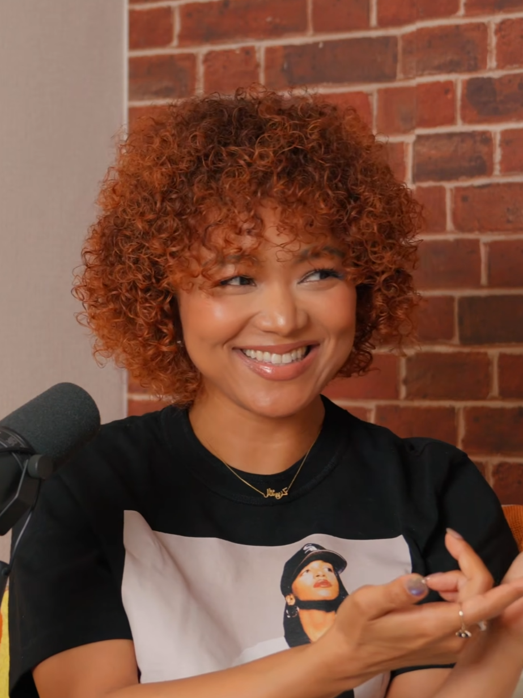

新曲3Li¥en
3Li¥enとCrystal Kay「Oishii」、Fouxが制作
3Li¥enとCrystal Kayによるシングル「Oishii」が2026年10月19日にリリースされた。Fouxが作曲とプロデュースを担当している。
3Li¥enCrystal Kay

Crystal Kay at Goldnrush Podcast／Goldnrush Podcast · CC BY 4.0（出典）／動画からの切り出し画像／当サイトでの加工なし
作詞は3Li¥enとCrystal Kay。Crystal Kayがボーカル、3Li¥enがラップを担当する。
公式の作品紹介によると、自分の身体を肯定するメッセージをテーマにした楽曲。Fouxが作曲とプロデュースを手がけた。